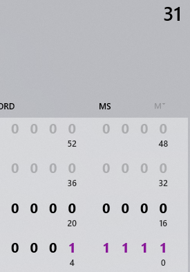
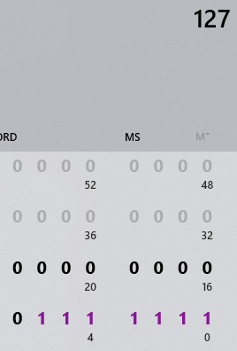
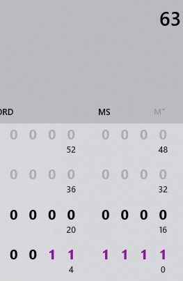

Большинство текста здесь – на понимание, а не только на быстрое решение. Можно пробежаться по примерам и решить аналогично, но я бы советовал понимать, что происходит, чтобы потом не отвечать на лабе по полчаса ¯\_(ツ)_/¯
Тут самое сложное – как-нибудь понять, что 1 байт это два символа, а один символ это 4 бита. То есть, когда
пишут "байты
10-9 – номер группы", то это 4 символа: 60017 –> EA71.
Пока что предполагаем, что байты считаются справа налево, т.е. 16-11 байты это самые левые. По документу по ссылке
это 2001:DB8 и еще один ноль, потому что адрес из документа на 4 байта, а занять этим нужно 6.
Первые пять букв имени переводятся в шестнадцатеричные значения ASCII вот здесь, получается ровно 5 байт. Передаю привет тем, у кого имя короче пяти букв – придётся дописать в конце по два нуля за каждую недостающую букву.
Адрес нужно не забыть сократить, это значит убрать ненужные нули (0DB8 –> DB8,
0000 –> 0) и все нули в конце заменить на ::. Префикс сети (циферка в конце)
получается равным 8 бит · 13 байт (с 16 по 4) = 104. И даже если имя короче, то всё равно 104, по условию
эти байты всё равно заняты полем "имя".
Готовый сокращённый адрес (адрес из документа, номер группы, имя):
2001:DB8:0:EA71:5649:5441:4C00::
/104
Расположение байтов из условия задачи в этом адресе:
16,15:14,13:12,11:10,9:8,7:6,5:4,3::
Чтобы разбить её на подсети, нужно посчитать, сколько бит (и в итоге символов) нужно для заданного числа сеток. Например, 32 сети это 5 бит (2^5 = 32), значит префикс сети 104-5 = 99. Адрес первой сети равен адресу выше (но уже с новым префиксом), а последней считается путём добавления всех пяти единичек после всего того, что написали изначально, переводя по пути в символы, естественно. Здесь будет два символа – 1111 –> F и 1000 –> 8 (нулями добивается в конце, а не как обычно в начале, потому что мы тут не математику считаем, а делим адреса на две половинки).
Готовый адрес последней сети:
2001:DB8:0:EA71:5649:5441:4CF8:: /99
95% работы за нас будет выполнять классический виндовый Калькулятор. Нам нужен тру-"Программист" калькулятор и битовая клавиатура. Заодно можно поменять QWORD на DWORD, всё равно больше восьми байт не пригодится:

Остальные 5% работы – навыки быстро переводить числа из двоичной в десятичную системы счисления и наоборот. Эти переводы я расписывать не буду, т.к. это и очень долго, и, я надеюсь, всем понятно, и можно сделать с помощью того же Калькулятора. Главное – не переводить весь адрес целиком, т.к. 16 единиц подряд для калькулятора это не 255.255, а 65535 :)
Посчитать x0 (в примере 10) и x1 (в примере 96) для получения исходной сети – несложно, должны получиться числа от 0 до 255. Эту сеть и её маску (/12, значит, 12 первых бит маски = 1) зачем-то просят записать в начале каждого задания, но ведь проще записать её сразу:
Десятичный адрес 10.96.0.0
Адрес 00001010.01100000.00000000.00000000
Маска 11111111.11110000.00000000.00000000
Сразу выделим неизменную часть красным: первые 12 бит – это адрес исходной сети, их трогать во всех последующих заданиях не будем.
Для того, чтобы найти новую маску подсети, нужно найти такую степень двойки x, что 2^x ≥ N. Например, если нужно 25 подсетей, то ближайшая степень двойки – 5: 2^5 = 32.
Более наглядно это можно сделать, набивая единицы в Калькуляторе справа налево до тех пор, пока значение не станет равным N-1 (не забываем, что счёт начинается с нуля):
Ровно столько единиц, сколько получилась степень двойки или сколько натыкали в Калькуляторе, нужно добавить к исходной маске подсети. Часть адреса и маски, относящаяся к подсетям, будет выделена синим.
Адрес 00001010.01100000.00000000.00000000
Маска 11111111.11111111.10000000.00000000
Префикс каждой подсети будет, как обычно, равен количеству единиц в маске, в данном случае 12 исходных + 5 подсети = /17.
В задании требуют указать, сколько битов заимствовали и из каких октетов. Не знаю, в чём суть данного вопроса, но напишем что забрали x (5) бит и из каких октетов по счёту (справа налево): 2 и 3.
В каждой такой подсети будет по 2^y узлов и по 2^y - 2 активных узлов, где y = 32 - префикс = кол-во оставшихся нулевых бит в маске. В данном случае y = 32-17 = 15, всего узлов 32768, активных узлов 32766.
Активные узлы – это общее число узлов минус адрес самой сети и broadcast-адрес (адрес рассылки на все узлы в подсети), то есть по сути, сколько реальных устройств может быть в такой подсети.
Количество бит, необходимое для N узлов, считается точно так же, как и для N подсетей: степень двойки 2^x ≥ N или набиванием единиц в Калькуляторе. Например, для 128 узлов x = 7: 2^7 = 128. Тот же пример в Калькуляторе:
Небольшое отличие, если дано количество активных узлов: 2^x должно быть на 2 больше, чем N: 2^x - 2 ≥ N, а в Калькуляторе нужно добивать до значения N+1. Например, для 62 активных узлов x = 6, т.к. 2^6 - 2 = 62. Тот же пример в Калькуляторе:
Продолжаем по первому примеру: для 128 узлов нужно 7 бит. Тогда маска подсети будет состоять из всех единиц, кроме 7 последних бит. Хост-биты будут выделены зелёным.
Адрес 00001010.01100000.00000000.00000000
Маска 11111111.11111111.11111111.10000000
Префикс подсети, соответственно, равен 32 - 7 = /25.
Количество подсетей равно 2^y, где y - количество бит, выделенное на адрес подсети, т.е. 32 - 12 исходных - 7 узловых = 13. Тогда подсетей будет 2^13 = 8192.
Почему для активных узлов делается -2 и в чём их отличие от узлов в целом, см. конец пункта 2.1.
Для примера возьмём сеть из п. 2.1. Ещё раз: красные биты никогда не трогаем, синие биты – подсети, зелёные биты – хосты.
Адрес 00001010.01100000.00000000.00000000
Маска 11111111.11111111.10000000.00000000
Для того, чтобы указать первую подсеть, все синие биты нужно установить в нули:
Адрес 00001010.01100000.00000000.00000000
Десятичный адрес 10.96.0.0
Последняя подсеть, соответственно, когда все синие биты – единицы.
Адрес 00001010.01101111.10000000.00000000
Десятичный адрес 10.111.128.0
В задании 2.1.2 нужно указать также и адрес N-й подсети. В этом случае синими битами устанавливается двоичное значение N-1 (поскольку, опять же, счёт начинается с нуля). Например, для N = 25-1 = 24), в двоичной – 11100:
Адрес 00001010.01101100.00000000.00000000
Десятичный адрес 10.108.0.0
Первые пять или последние пять сетей считаются по тому же принципу. Первые пять: все синие нули, затем ..001, ..010, ..011, ..100, последние пять (с конца в начало для наглядности): все синие единицы, затем ..110, ..101, ..100, ..011.
В качестве примера – всё та же сеть из п. 2.1, её первая подсеть. И ещё раз про биты: красные биты никогда не трогаем, синие биты – подсети, зелёные биты – хосты.
Адрес 00001010.01100000.00000000.00000000
Маска 11111111.11111111.10000000.00000000
Адрес сети – все зелёные биты установлены в нули плюс префикс сети в конце:
Адрес 00001010.01100000.00000000.00000000
/17
Десятичный адрес 10.96.0.0 /17
Адрес первого узла – зелёные биты образуют значение 1, т.е., все нули, а последний – единица:
Адрес 00001010.01100000.00000000.00000001
Десятичный адрес 10.96.0.1
Адрес последнего узла можно получить вычитанием единицы из максимального числа, представляемым зелёными битами, т.е. всеми единицами. В общем случае, это установка всех зелёных бит, кроме последнего, в единицу.
Адрес 00001010.01100000.01111111.11111110
Десятичный адрес 10.96.127.254
Широковещательный адрес, соответственно, когда все зелёные биты – единицы.
Адрес 00001010.01100000.01111111.11111111
Десятичный адрес 10.96.127.255
Пример указания конкретной подсети + всех нужных адресов. Исходная сеть:
Адрес 00001010.01100000.00000000.00000000
Маска 11111111.11111111.11111111.11000000
Адрес последней подсети:
Адрес 00001010.01101111.11111111.11000000
Десятичный адрес 10.111.255.192 /26
Адрес первого узла этой подсети:
Адрес 00001010.01101111.11111111.11000001
Десятичный адрес 10.111.255.193
Адрес последнего узла этой подсети:
Адрес 00001010.01101111.11111111.11111110
Десятичный адрес 10.111.255.254
Широковещательный этой подсети:
Адрес 00001010.01101111.11111111.11111111
Десятичный адрес 10.111.255.255